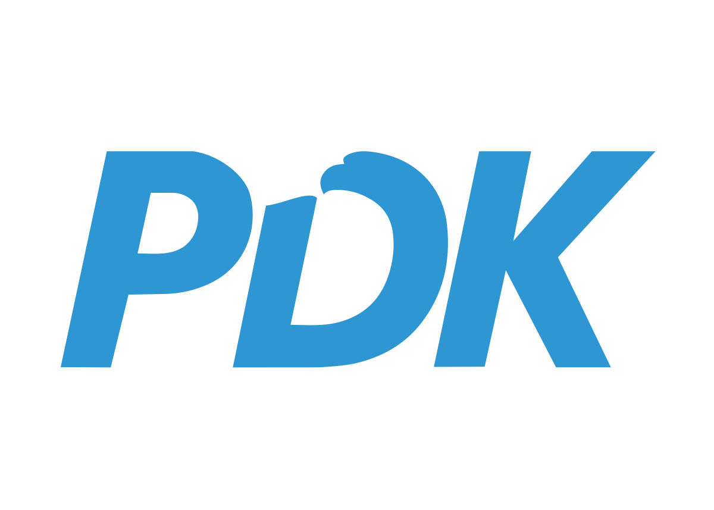
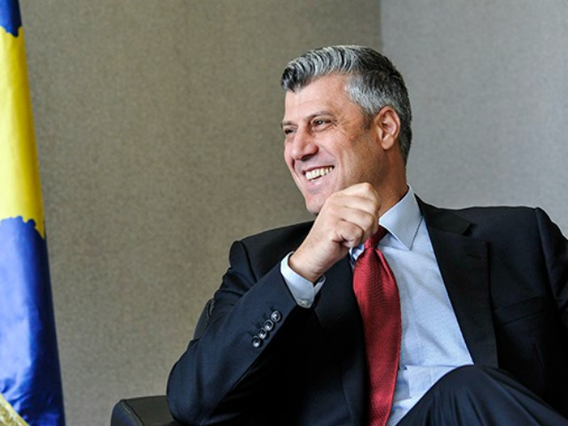
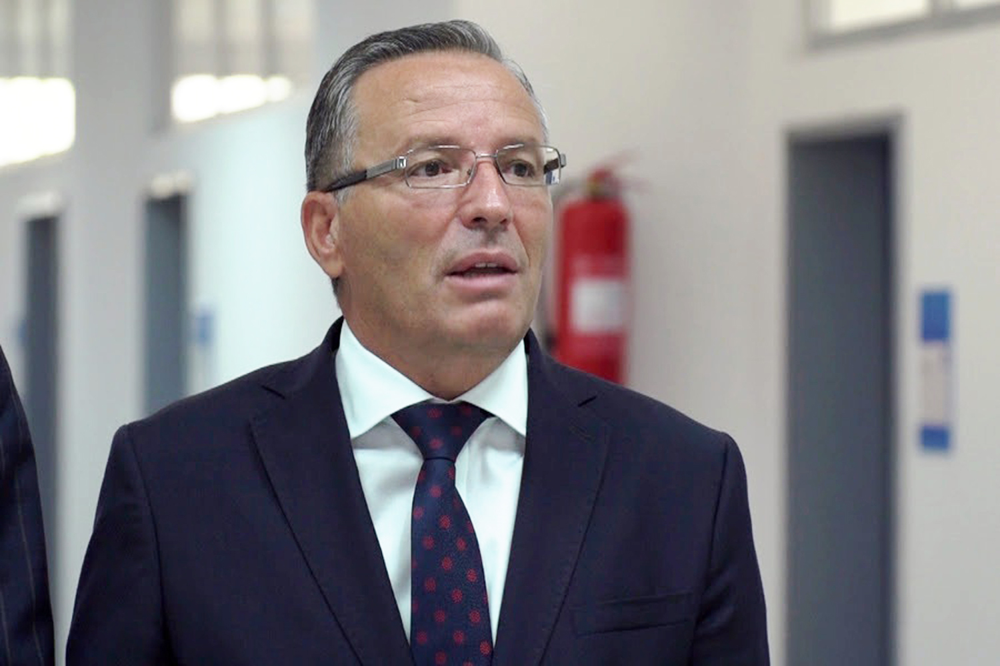
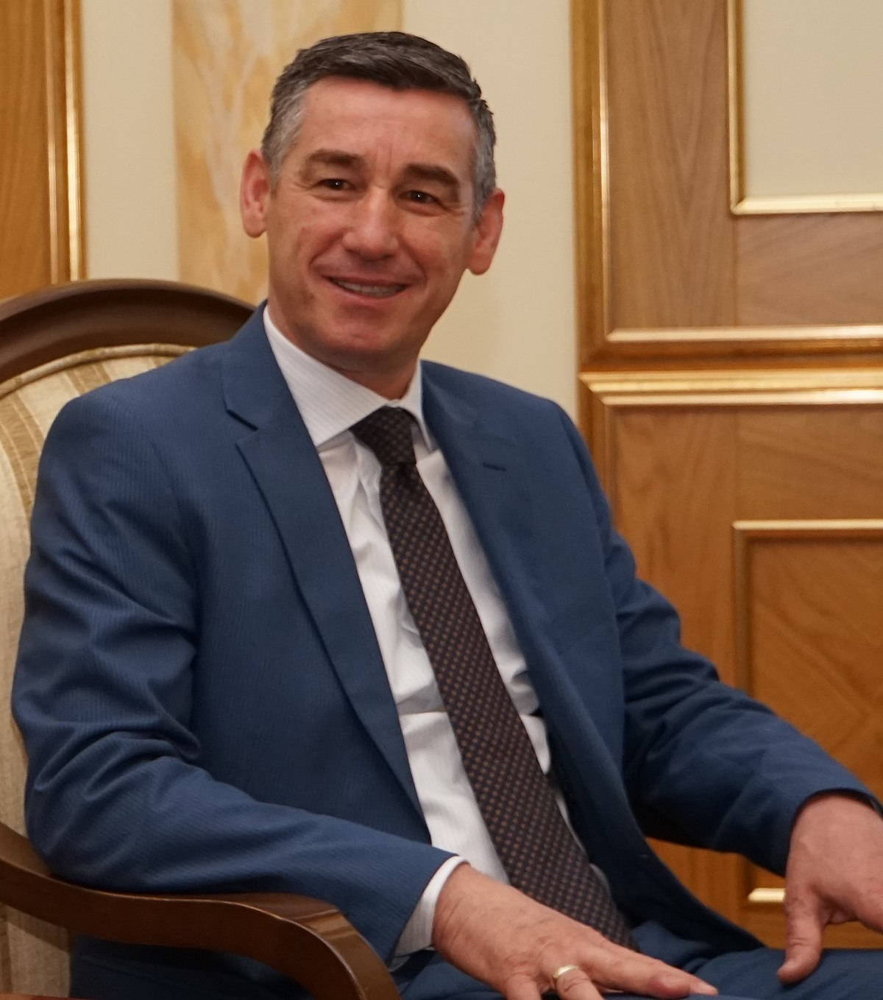
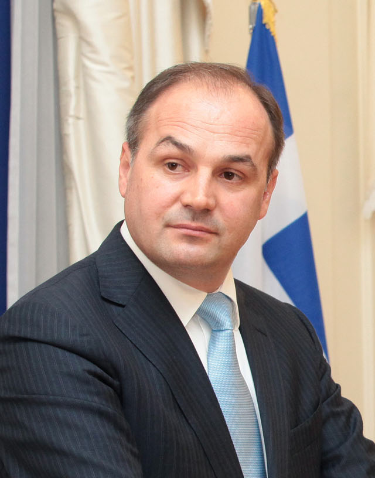

Kjo faqe ofron informacion të detajuar mbi Partinë Demokratike të Kosovës (PDK) dhe liderët e saj kryesorë.
Partia Demokratike e Kosovës (PDK) është një nga partitë më të fuqishme politike në Kosovë. Ajo u themelua në vitin 1999 pas Luftës së Kosovës dhe rrënjët e saj janë të lidhura ngushtë me Ushtrinë Çlirimtare të Kosovës (UÇK), e cila luajti një rol kyç në lëvizjen për pavarësinë e Kosovës.
PDK u formua fillimisht si një degë politike e UÇK-së, dhe qëllimi i saj ishte krijimi i një Kosove të fortë dhe të pavarur. Pas shpalljes së pavarësisë së Kosovës në vitin 2008, PDK ka qenë në krye të peizazhit politik të Kosovës. Partia ka qenë një forcë e rëndësishme për integrimin e Kosovës në Bashkimin Evropian dhe komunitetin ndërkombëtar dhe ka avokuar vazhdimisht për njohjen e sovranitetit të Kosovës në mbarë botën.
Parimet kryesore të partisë përfshijnë mbështetje për zhvillimin ekonomik të Kosovës, forcimin e institucioneve demokratike, sigurimin e sundimit të ligjit dhe avancimin e drejtësisë sociale. Nën udhëheqjen e figurave të shquara si Hashim Thaçi, Bedri Hamza, Kadri Veseli dhe Enver Hoxhaj, PDK ka punuar për krijimin e një Kosove të qëndrueshme dhe të begatshme që mund të marrë vendin e saj në skenën globale.
Hashim Thaçi është një nga anëtarët e themelues të Partisë Demokratike të Kosovës dhe ka qenë një figurë qendrore në jetën politike dhe diplomatike të Kosovës. Ai ka shërbyer si Kryeministër dhe President i Kosovës, duke luajtur një rol kyç në luftën e Kosovës për pavarësi dhe në njohjen e mëtejshme të Kosovës nga komuniteti ndërkombëtar.
Rruga politike e Thaçit filloi gjatë Luftës së Kosovës, ku ai ishte lider i Ushtrisë Çlirimtare të Kosovës (UÇK), e cila luftoi kundër forcave serbe. Pas luftës, ai kaloi në politikë, themeloi PDK-në dhe avokoi për sovranitetin e Kosovës. Si Kryeministër, ai udhëhoqi krijimin të qeverisë së parë pas luftës dhe punoi pa u lodhur për arritjen e njohjeve ndërkombëtare për Kosovën.
Nën udhëheqjen e tij, Kosova fitoi anëtarësimin në Bankën Botërore, Fondin Monetar Ndërkombëtar (FMN) dhe organizata të tjera ndërkombëtare. Thaçi gjithashtu udhëhoqi negociatat që kulmuan me shpalljen e pavarësisë së Kosovës në vitin 2008. Gjatë karrierës së tij politike, Thaçi ka qenë një mbështetës i fortë për integrimin e Kosovës në Bashkimin Evropian dhe në NATO. Trashëgimia e tij si luftëtar për pavarësinë e Kosovës është një element përcaktues i udhëheqjes së tij.
Bedri Hamza është një figurë e shquar brenda PDK-së dhe një lider kyç i zhvillimit ekonomik të Kosovës. Ai ka shërbyer si Ministër i Financave të Kosovës dhe njihet gjerësisht për rolin e tij në stabilizimin e ekonomisë pas luftës. Puna e Hamzës në sektorin financiar e ka bërë atë një shërbyes të angazhuar publik, i fokusuar në transformimin ekonomik të Kosovës.
Hamza luajti një rol të rëndësishëm në përpjekjet e Kosovës për të krijuar një sistem financiar të qëndrueshëm. Ai punoi për reforma që stabilizuan sektorin bankar të Kosovës, introdukoi politika fiskale që tërhiqnin investime të huaja dhe kishte një rol kyç në hartimin e buxhetit të Kosovës dhe strategjisë financiare. Puna e tij ishte e rëndësishme për sigurimin që Kosova mund të funksiononte si një ekonomi e qëndrueshme pas viteve të pasigurisë që pasuan luftën.
Si Ministër i Financave, Hamza gjithashtu kontribuoi në integrimin e Kosovës në institucionet ndërkombëtare financiare. Puna e tij në përmirësimin e perspektivës ekonomike të Kosovës ka qenë thelbësore për progresin e vendit dhe zhvillimin e tij të vazhdueshëm.
Kadri Veseli është një figurë tjetër e rëndësishme në PDK dhe në peizazhin politik të Kosovës. Veseli ka qenë Kryetar i Kuvendit të Kosovës dhe ka luajtur një rol kyç në sigurinë kombëtare dhe përpjekjet diplomatike të Kosovës. Ai është gjithashtu një ish-drejtues i Shërbimit Informativ të Kosovës (SHIK), një pozita që i dha atij ndikim të madh në politikat e sigurisë të vendit.
Veseli njihet për punën e tij në sigurinë kombëtare dhe përpjekjet për të siguruar sovranitetin dhe integritetin territorial të Kosovës. Si Kryetar i Kuvendit, ai ka pasur një rol kyç në formësimin e politikave dhe prioriteteve legjislative të Kosovës. Udhëheqja e tij ka ndihmuar që të sigurohet respektimi i pavarësisë së Kosovës nga aktorët ndërkombëtarë dhe ata vendas.
Një nga prioritetet kryesore të Veselit ka qenë integrimi i Kosovës në organizata ndërkombëtare si NATO dhe Bashkimi Evropian. Ai ka punuar pa u lodhur për promovimin e njohjes ndërkombëtare të Kosovës dhe për forcimin e lidhjeve me shtetet e tjera. Karriera politike e Veselit shënohet gjithashtu nga puna e tij në sigurinë kombëtare, duke mbrojtur interesat e Kosovës brenda dhe jashtë vendit.
Enver Hoxhaj është një nga anëtarët më të rëndësishëm të PDK-së, i njohur për punën e tij në politikat e jashtme dhe marrëdhëniet ndërkombëtare. Hoxhaj ka shërbyer si Zëvendëskryeministër dhe Ministër i Punëve të Jashtme i Kosovës, dhe ai ka luajtur një rol kyç në avancimin të agjendës diplomatike të Kosovës dhe në sigurimin e njohjes nga aktorë të rëndësishëm ndërkombëtarë.
Gjatë mandatit të tij si Ministër i Punëve të Jashtme, Hoxhaj ka punuar për ndërtimin e marrëdhënieve me shtete të tjera, duke u fokusuar në integrimin e Kosovës në organizata ndërkombëtare si Kombet e Bashkuara dhe Bashkimi Evropian. Ai ka qenë i rëndësishëm në përpjekjet diplomatike për të siguruar mbështetje për sovranitetin e Kosovës dhe për përparimin e saj në arenën ndërkombëtare.
Si anëtar i PDK-së, Hoxhaj ka qenë një mbështetës i fortë i së ardhmes evropiane të Kosovës dhe të vendit të saj brenda komunitetit global. Puna e tij në politikat e jashtme, e bashkëngjitur me angazhimin e tij për zhvillimin e Kosovës, e ka bërë atë një nga figurat më të rëndësishme në historinë post-pavarësisë të Kosovës.
